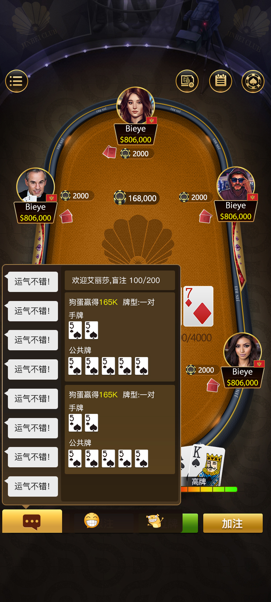
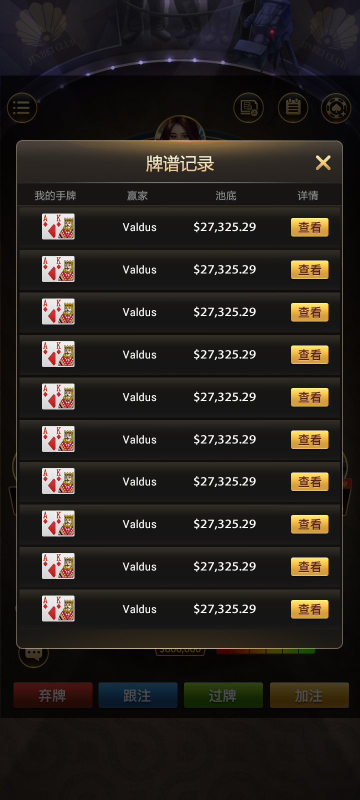
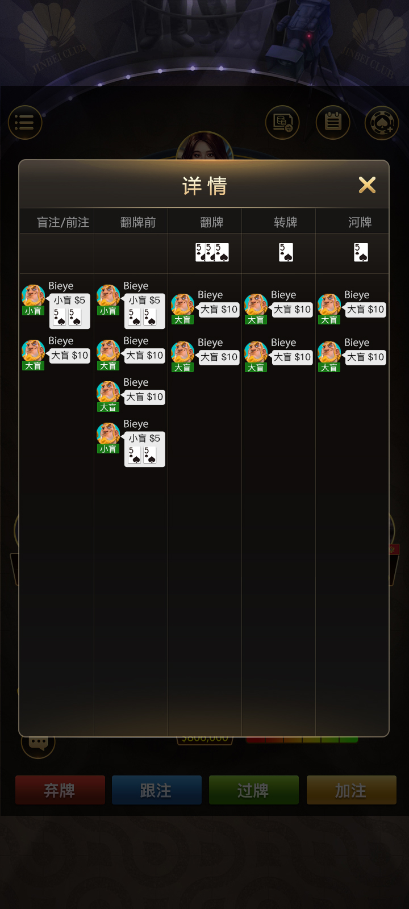
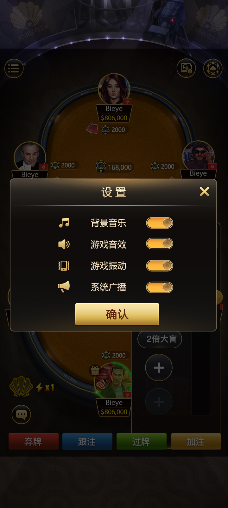

基础操作
弃牌、跟注、过牌和加注按钮位于稳定的底部操作区。

弃牌、跟注、过牌和加注按钮位于稳定的底部操作区。
桌内聊天区同时展示手牌、公共牌、牌型及结果信息。
牌桌设置提供背景音乐、音效、振动和系统广播开关。



本专题把“德州扑克、德州源码”与用户能实际看到的牌桌和牌谱功能连接起来，比只列关键词更有利于搜索结果摘要理解页面主题。
返回首页查看 C++ 回合、TypeScript 消息和俱乐部专题。